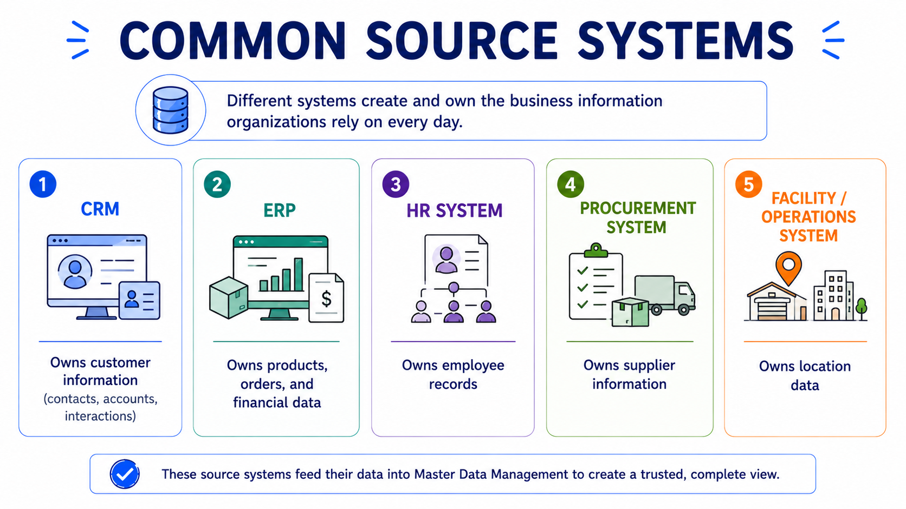

Source Systems and Data Ownership
Module support notes
Business information does not appear in one place. Customer records may originate in one application, product information in another, and employee information somewhere else entirely. As organizations grow, multiple systems begin contributing to the same business entities — and without clear rules about which system to trust, inconsistency follows.
Definition
A system of record is the authoritative source for a specific business entity or attribute. It is the application whose version of the data is considered correct — and whose standards other systems should follow, not override.
Where master data originates
Organizations use many systems to support daily operations. CRM platforms manage customer information. ERP platforms manage products and financial data. HR systems maintain employee records. These are called source systems because they create or maintain business information. Understanding where data originates is the first step toward managing it consistently.

Ownership makes trust possible
Technology alone does not create trusted data. Organizations assign ownership to ensure information remains accurate and well-maintained over time. Data owners establish standards, approve changes, and define quality expectations. Clear ownership answers the questions that matter most: who creates this information, who approves updates, and who is responsible when something goes wrong.
Creating trusted master data is rarely one team's responsibility. Business teams understand how information should be used. Technology teams manage systems and data movement. Governance teams establish policies and monitor quality. Trusted business information happens when all three work together.
No ownership means no accountability
When no one owns a data domain, quality degrades silently. Different teams begin making local decisions about how to store or update information, and over time those decisions diverge. AI systems trained on data without clear ownership inherit those inconsistencies — and their outputs reflect it.